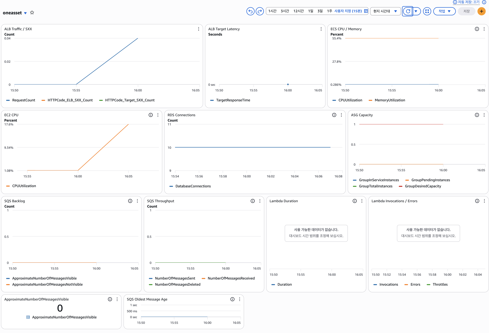
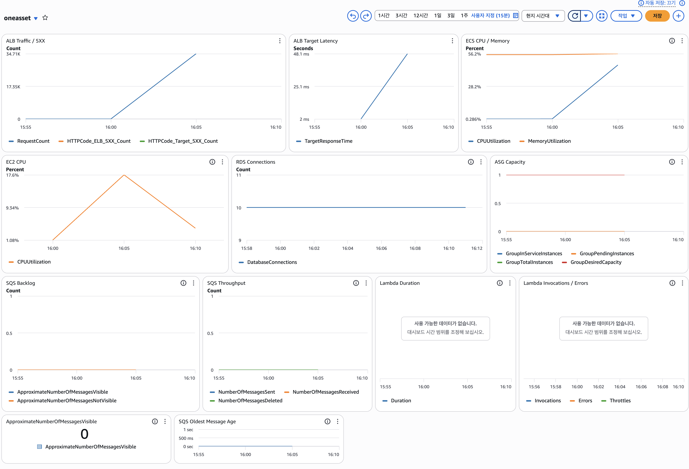
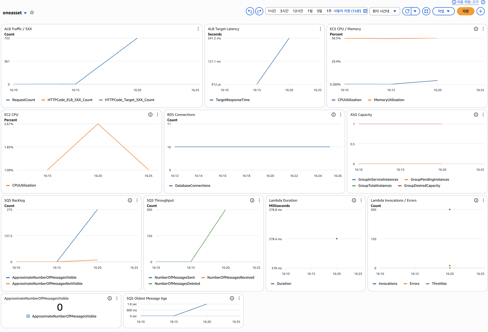
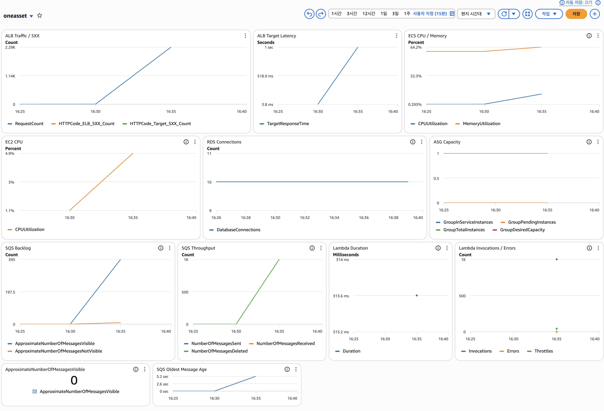

Load Test & Observability




부하 테스트는 API read path와 upload async pipeline 두 가지 경로로 나눠서 진행했습니다. 1-4번 테스트는 배포 환경, 인증 헤더, read API, 소량 업로드 파이프라인을 확인하는 기준선으로 사용했고, 5번과 6번을 주요 성능/구조 검증 결과로 정리했습니다.
Read Stress
Cloudflare, ALB, ECS on EC2, Spring Boot, RDS로 이어지는 API read path를 검증했습니다. 동일 프로젝트의 에셋 목록조회 요청을 단계적으로 증가시켜 API 계층의 안정성을 확인했습니다.
Upload Async
Spring upload, S3 original object, RDS PROCESSING, SQS, Lambda, S3 variant, Spring callback, RDS READY로 이어지는 비동기 파이프라인을 검증했습니다.
| Scenario | Core Result | Observation |
|---|---|---|
| 01 Smoke | 46 requests, failure rate 0%, p95 237ms | 배포 상태와 API key 인증을 확인했습니다. |
| 02 Read Baseline | 1,676 requests, failure rate 0%, p95 169ms | 읽기 API 기준선을 확인했습니다. |
| 03 Upload Pipeline | 20 uploads, READY success 100%, READY p95 4.22s | 소량 업로드 E2E 상태 전이를 확인했습니다. |
| 04 Small Spike | 2,105 requests, failure rate 0%, p95 192ms | 50 VU 목록조회 spike를 확인했습니다. |
| 05 API Stress | 34,708 requests, failure rate 0%, p95 414.77ms, p99 723.49ms | API read path는 실패 없이 안정적으로 동작했습니다. |
| 06 Upload Burst / 300 | 300 uploads, upload success 100%, READY p95 15.03s, DLQ 0 | SQS backlog peak 약 275, Lambda invocations 300으로 후처리 분리를 확인했습니다. |
| 06 Upload Burst / 1000 | 1,000 uploads, upload success 100%, API p95 4.49s, READY p95 30.10s | 고부하에서 실패는 없었지만 READY 전환 지연 한계가 드러났습니다. |
업로드 burst가 커질수록 READY 상태까지 걸리는 시간이 증가했고, API 서버보다 SQS/Lambda 기반 후처리 파이프라인이 사용자 체감 완료 시간에 영향을 준다는 점을 확인했습니다. 이 결과는 단순히 성능이 좋다는 의미보다, 시스템에서 병목이 발생할 수 있는 위치를 관찰했다는 점에 의미가 있습니다.